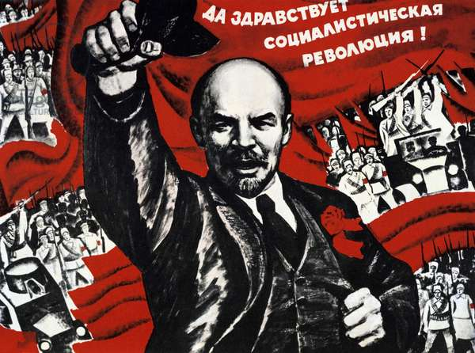
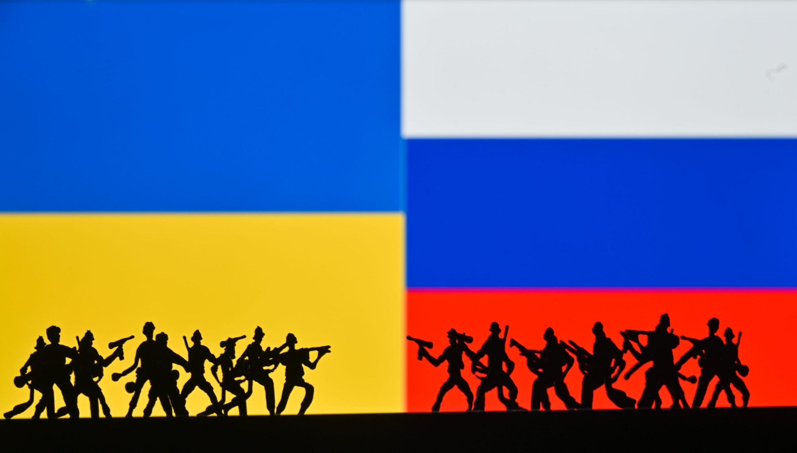

Ukraine's history dates back to ancient times when it was part of the Kyivan Rus, a powerful medieval state. Throughout the centuries, the region experienced various influences and dominations, including the Mongol invasions, the Polish-Lithuanian Commonwealth, and the Ottoman Empire. In the late 17th century, Ukraine became divided, with its western parts falling under Polish rule and its eastern regions under Russian control. In the 19th century, the national identity of Ukrainians strengthened through cultural and literary movements. After World War I and the collapse of empires, Ukraine declared independence in 1918, but its sovereignty was short-lived, as it was soon invaded and annexed by the Soviet Union. Despite periods of repression and famine under Soviet rule, Ukraine managed to maintain its unique culture and identity. Following the dissolution of the Soviet Union in 1991, Ukraine finally gained independence, leading to a complex journey of nation-building and establishing itself as a sovereign state.

The Soviet Union, officially formed in 1922, was a socialist federation comprising 15 republics, including Russia, Ukraine, Belarus, and others. Under the leadership of the Communist Party and figures like Joseph Stalin, the Soviet Union experienced rapid industrialization and significant achievements in space exploration. However, the regime also saw severe human rights abuses, political repression, and widespread censorship. Throughout the Soviet era, satellite states in Eastern Europe, known as the Eastern Bloc, were effectively under Moscow's control. These countries, including Poland, Hungary, East Germany, and others, were heavily influenced by the Soviet Union's political, economic, and military systems. The Eastern Bloc ultimately dissolved with the fall of the Soviet Union in 1991, leading to the emergence of independent nations.

In 2014, tensions escalated between Russia and Ukraine, culminating in a crisis that had far-reaching consequences. The conflict began with the Ukrainian Revolution, also known as Euromaidan, where mass protests led to the ousting of Ukraine's pro-Russian President Viktor Yanukovych. Russia, perceiving the uprising as a threat to its interests, subsequently annexed Crimea in March 2014, a move widely condemned by the international community. This annexation was followed by unrest in Eastern Ukraine, particularly in Donetsk and Luhansk regions, where pro-Russian separatists declared self-proclaimed republics and engaged in armed conflict with Ukrainian forces. The situation further deteriorated as Russia allegedly provided military support to the separatists. The war in Eastern Ukraine has led to thousands of deaths and a significant humanitarian crisis.
Ukrainians have fiercely resisted the Russian aggression and have been actively fighting to defend their territorial integrity and sovereignty. The Ukrainian government has sought support from the international community, leading to sanctions against Russia. The conflict has strained diplomatic relations and had profound geopolitical implications. The resilience and determination of the Ukrainian people in the face of external aggression have been crucial in their efforts to safeguard their nation's independence and territorial integrity.
